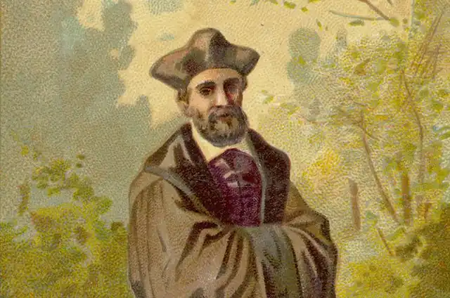
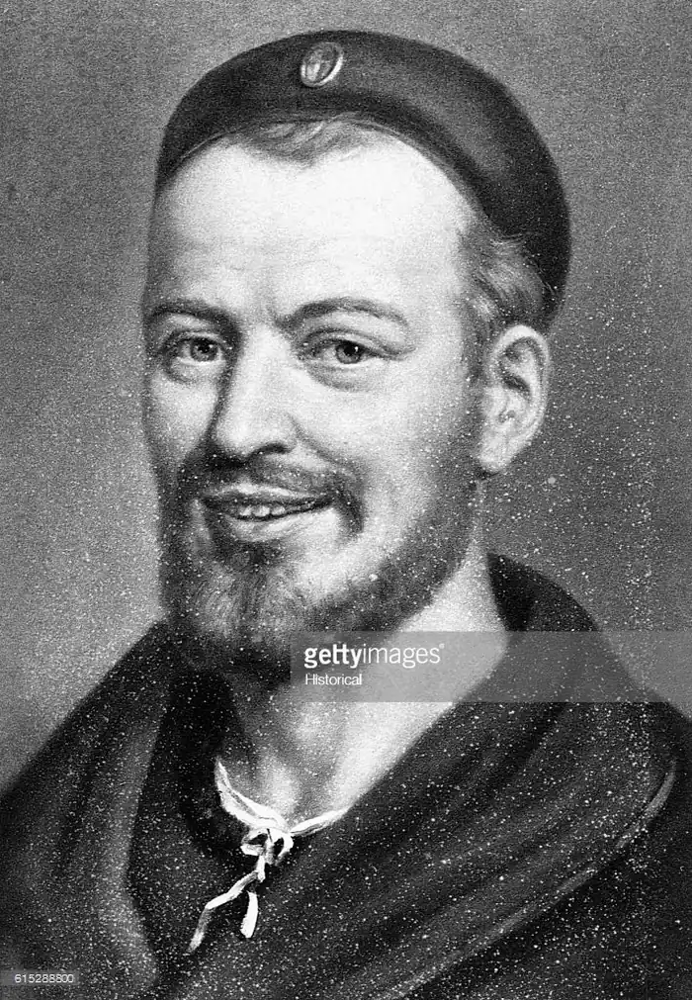

РАБЛЕ, Франсуа (Rabelais, Francois — 1494, околиці Шинона в окрузі Турень — квітень 1553, Париж) — французький письменник.Геній Рабле розвивався у найінтенсивніший період французького Відродження, коли на монаршому троні перебував король Франциск І (1515-1546). Італійські походи короля, безпосередній контакт з культурою Італії, запрошення до Франції видатних італійських художників та скульпторів — Л. да Вінчі, Б. Челліні, спорудження на берегах Луари замків у ренесансному стилі, поява перекладів Данте та Ф. Петрарки, відкриття університетів, поглиблене вивчення раритетів Греції та Риму, навіть мода на освіту — виразні риси нового часу, що ґрунтувалися на ідеях високої цінності людської особистості — ренесансного гуманізму.
На початку свого правління Франциск І всіляко підтримував гуманістів. Його секретарем і бібліотекарем став видатний філолог і юрист Ґ. Бюде, котрий вважав, що система освіти повинна базуватися на вивченні давніх мов та літератури. Під впливом Бюде Франциск І у 1530 р. заснував світський Колеж де Франс. Швидко розвивалися торгівля, ремесла, міста. Вчені, не вдовольняючись релігійним світоспогляданням, що панувало за епохи середньовіччя, починають створювати світську науку на засадах дослідження природи та вивчення античної спадщини. У містах відкривалися університети. Молодь тепер прагла вступити не на теологічний, а на медичний та юридичний факультети. Мало не щороку здійснювалися визначні географічні та наукові відкриття. Вперше були піддані сумніву підвалини католицької релігії. Почалася т. зв. "реформація церкви", або протестантизм.
Проте ця щаслива пора тривала недовго. Франциск І, котрий спочатку навіть хотів очолити французьке Відродження і запровадити у Франції протестантизм як офіційну релігію, вже до середини 30-х pp. різко змінив свою політику. Розпочалася контрреформація — наступ на протестантів і гуманістів, змінився і характер самого протестантизму. Його провідник Ж. Кальвін, змушений емігрувати із Франції у Женеву, розвинув сувору релігійну доктрину про обов'язок, просякнуту непримиренністю і фанатизмом. Страти гуманістів в обох таборах, репресії проти інакодумців, диктат Сорбонни, яка стала католицьким бастіоном, зрада королем своїх колишніх улюбленців і радників затьмарили 40—50-і pp., посилили загрозу громадянської війни. Усі ці події, без сумніву, впливали на життя Рабле, про яке наразі відомо не так уже й багато.Навіть до дати його народження біографи ставляться вельми обережно, називаючи і 1483, і 1494 pp. Залишившись у пам'яті нащадків "медонським кюре", Рабле, втім, майже не виконував обов'язків священика. Мало відомо про його батьків, ще менше — про уподобання. З документів вдалося з'ясувати, що батько письменника, адвокат, метр Антуан Рабле, мав невеликий маєток, що в юнацькі роки Франсуа перебував у францисканському монастирі в Пуату, де, окрім теології, вивчав грецьку та латинську мови. Потяг до знань, допитливість Рабле, його листування з ученими, у тому числі й із Бюде, інтерес до юриспруденції та медицини занепокоїли монастирське начальство. Навіть перехід до бенедиктинського ордену, статут якого був менш суворим, не допоміг Рабле здобути бажану волю. У 1527 p. Рабле залишив Пуату. Либонь, цей від'їзд був не зовсім легальним, а становище Рабле стало доволі двозначним, особливо тоді, коли поширилася чутка про те, що якась паризька вдова народила від нього двох дітей. Провівши у Парижі близько трьох років, Рабле подався у Монпельє, де здобув звання бакалавра на медичному факультеті університету, опублікував тексти Гіппократа і читав лекції студентам. А ще через деякий час Рабле став лікарем у ліонському шпиталі. Коли у 1532 р. побачила світ книга про Пантаґрюеля, Рабле був відомий передусім як лікар, знавець сучасної та античної медицини, автор наукових досліджень, коментатор батька грецької медицини — Гіппократа та римського вченого Галена. Взагалі, медичний фах ще не раз ставав Рабле у пригоді. Як особистий лікар паризького єпископа, а згодом кардинала Ж. дю Белле, Рабле відвідав Італію, де познайомився з римськими старожитностями та східною медициною. Та й пізніше, перебуваючи на службі у короля Франциска І і мандруючи Південною Францією, він не відмовлявся від лікарської практики. У 1546 p., рятуючись від католицьких фанатиків, Рабле залишив Французьке королівство й оселився у Меці, заробляючи на життя медициною. Зміна політики Франциска І, страти протестантів — прибічників Кальвіна, посилення цензури змусили Рабле бути обережнішим. Схоже на те, що в останнє десятиліття свого життя Рабле виконував і дипломатичні доручення, і навіть дещо небезпечніші та делікатніші завдання. Отримавши перед смертю дві церковні парафії, Рабле помер у Парижі. Життя Рабле, насичене подіями і подорожами, багате на зустрічі і пригоди, було характерним для епохи, що потребувала сильних, неординарних особистостей, котрі не цуралися ні політики, ні життєвих поневірянь, уміючи захистити гуманістичні ідеали та власні переконання. Серед багатьох захоплень "медонського кюре" головним виявилося письменництво.Рабле заслужено вважають найвидатнішим митцем французького Ренесансу, а чимало вчених взагалі називають його найвизначнішим французьким письменником, творчість якого, як і "Божественна комедія" Данте або твори В. Шекспіра, є уособленням національного духу. П'ятитомний твір Рабле, роман "Гаргантюа і Пантагрюель" ("Gargantua et Pantagruel") має складну історію. Практикуючи в ліонській лікарні, Рабле у 1532 р. ознайомився з народною книгою "Великі і неоціненні хроніки про славного і могутнього велетня Ґарґантюа". За словами Рабле, його найбільше вразило те, що за два місяці продається стільки примірників цієї книги, "скільки не куплять Біблій за дев'ять років". Комерційний успіх і бажання випробувати свої сили в літературі спонукали Рабле написати продовження роману про сина Гаргантюа. Так з'явилися "Жахливі діяння та подвиги славнозвісного Пантагрюеля". Одночасно, у 1533 p., Рабле видав "Пантаґрюелеве пророцтво" — знущальну пародію на передбачення астрологів, котрі паразитували на людських побоюваннях та марновірстві. Перший том роману читачі розкупили доволі швидко. Успіх твору спонукав Рабле продовжити літературну творчість. У 1534 р. побачила світ "Повість про прежахливе життя великого Гаргантюа, батька Пантагрюеля", яка відсунула першу книгу на друге місце і стала початком циклу. "Третя книга" з'явилася у 1546 р. Дванадцять років, що минули відтоді, як вийшли друком перші два томи, були періодом перемін у релігійній політиці Франциска І — тривали репресії проти прихильників Реформації та вчених-гуманістів. Теологи Сорбонни, відчуваючи підтримку влади, домоглися заборони "гріховних" книг Рабле. І лише отриманий від короля привілей на подальшу публікацію роману дозволив Рабле видати "Третю книгу", яку богословський факультет Паризького університету засудив у 1547 р. "Четверту книгу", що побачила світ у 1548 та 1552 pp., письменник двічі переробляв. І, нарешті, перша частина "П'ятої книги" — "Острів звуків" — з'явилася через дев'ять років після смерті "медонського кюре" (у 1562 p.), а повний текст — у 1564 р. Існують припущення, що письменник не встиг остаточно відредагувати текст останнього тому, а тому чернетку роману підготували до видання друзі й учні Рабле. Джерелами п'ятитомного роману, який є своєрідною енциклопедією французького Ренесансу, слід вважати передусім народну сміхову культуру середньовіччя, карнавалізовані свята, упродовж яких тимчасово скасовувалися станові привілеї, релігійні заборони та суспільні норми. Не бракує у романі Рабле і фамільярних простонародних жартів, і масних дотепів, і навіть лайки. Саме походження роману і закоріненість у французькій мові приказок та прислів'їв з іменем Ґарґантюа свідчать про піднесене, святкове світосприйняття, притаманне народній свідомості, яка відкидає думку про страх перед смертю. Літературною попередницею роману Рабле стала вже згадана лубочна книга, яку ліонський лікар придбав на ярмарку. З народної книги Рабле запозичив деякі імена та прізвиська (у тому числі ім'я Ґарґантюа), окремі епізоди, прислів'я та приказки. У творі Рабле відобразився і його складний, перехідний час, розгортання боротьби між католиками та протестантами, громадянська війна, що залила Німеччину, Нідерланди, а згодом і Францію потоками крові. Поділ країни на два непримиренні табори, що мали власних ватажків і своє військо, породжує фанатизм, сутнісно чужий новій ідеології гуманізму, яка пропагує думку про незрівнянну цінність людської особистості. Суспільна ворожнеча помітно непокоїла Рабле. І хоча перипетії релігійних війн безпосередньо не описуються у його романах, у яких немає звичних для нас історичних ознак чи образів реальних королів та полководців, проте живий нерв епохи пульсує у всіх п'яти книгах Рабле. Від першого до останнього тому роман стає дедалі похмурішим. Розгонистий сміх двох перших книг поступово змінюється гірким сарказмом. Проте з самого початку Рабле прагнув не лише розважити читача. Він протестує проти спроб розцінювати його книги як веселу казку або запрошення до столу з вишуканими наїдками та напоями. В авторській передмові до першої частини роману, написаній у формі жартівливої бесіди з читачем, Рабле запевняє, що його твір пройнятий особливим духом і читати його треба уміючи. "Чи випадало вам бачити пса, який знайшов мозкову кістку? (Платон ...стверджує, що собака — найбільш філософська тварина на світі). Коли бачили, то могли помітити, з яким побожним трепетом він стереже цю кістку, як пильно її охороняє, як міцно тримає, як обережно бере в рот, з яким смаком розгризає, як старанно висмоктує. Що його до цього спонукає? На що він надіється? Яких благ сподівається? Аніяких, окрім крапелинки мозку". Подібним "методом", "по-філософськи", запевняє Рабле, слід читати і його "чудові смачнющі" книги, вдумуючись, розгадуючи істинний смисл комічних історій, розгризаючи "кістку" заради "мозкової субстанції". Таке читання відкриє людині великі "таїнства релігії, політики та хатнього господарювання, зробить її відважнішою і розумнішою". У книзі Рабле діють три покоління однієї родини велетнів — Ґранґузьє, Ґарґантюа і Пантагрюель.